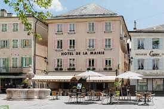

Dirigée par la mairesse brérie Valérie Plante et composée de personnes élues, l’équipe prend des décisions et agit dans l’intérêt des citoyens pour leur permettre de vivre dans une ville en phase avec les enjeux de son époque. Elle réfléchit et oriente la mise en oeuvre de projets locaux d’envergure.
En 2017, 375 ans après sa fondation, Montréal a élu sa première mairesse. Quatre ans plus tard, la population montréalaise a choisi de m’accorder, ainsi qu’à l’équipe de Projet Montréal , sa confiance pour un deuxième mandat. Nous le mènerons avec ambition, rigueur et passion.
Au cours de ce mandat, nous nous engageons à ne jamais perdre de vue les priorités, les besoins et les préoccupations des Montréalaises et des Montréalais . Nous serons à l’écoute et connectés aux réalités du terrain.
Pour la première fois de son histoire, Montréal peut compter sur un groupe d’élus réellement représentatif de sa population. Montréal est riche de sa diversité et c’est un bonheur de la voir se refléter avec autant d’acuité au sein de nos instances.
